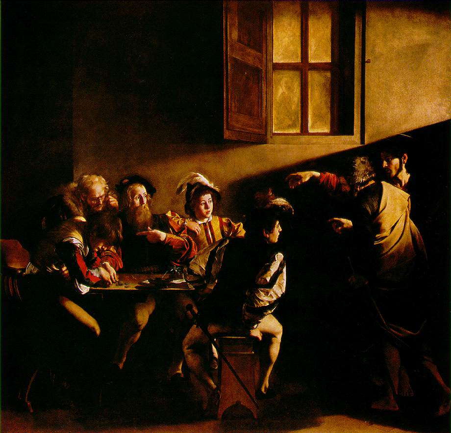
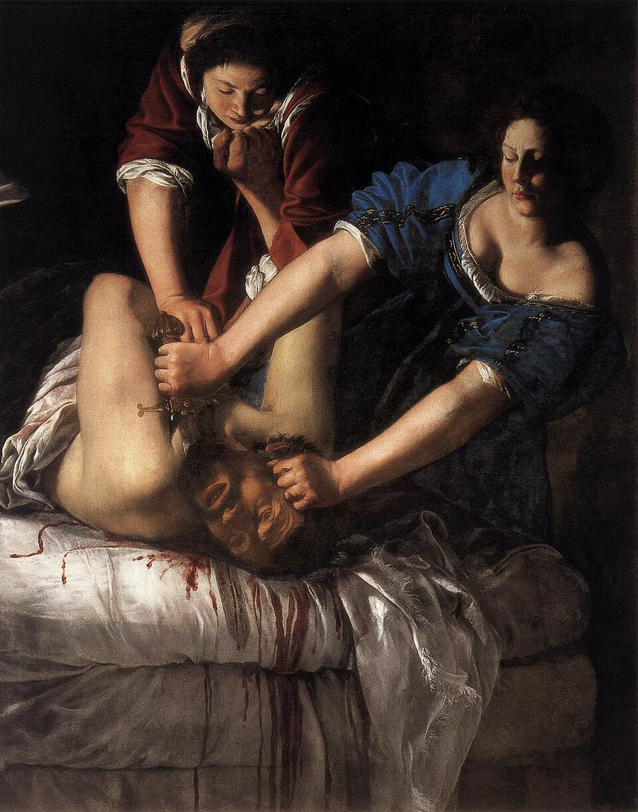

Home › Eras › Baroque and Rococo
Baroque and Rococo
Baroque art is dramatic, emotional and grand, used by the Catholic Church and by monarchs. Rococo is its lighter, playful successor.
Italy
Caravaggio's strong light, Bernini's flowing marble and Artemisia Gentileschi's forceful women define the early Baroque in Rome and beyond.
Spain and Flanders
Velázquez served the Spanish court, and Rubens ran a huge workshop in Antwerp.
Dutch Golden Age
With no royal court and a wealthy middle class, Dutch painters made landscapes, still lifes, group portraits and domestic scenes. Rembrandt and Vermeer are the giants.
France
Versailles became a model for royal splendor. Under Louis XV the lighter, ornate Rococo style flourished, with painters such as Watteau and Fragonard.
Science and the senses
New instruments, from telescopes to microscopes, shaped how artists saw. Many Baroque works stage an emotional encounter between viewer and image.
Key works

1599–1600The Calling of Saint Matthew
Caravaggio · Painting

c. 1620Judith Slaying Holofernes
Artemisia Gentileschi · Painting
 1642
1642The Night Watch
Rembrandt van Rijn · Painting
 1647–52
1647–52The Ecstasy of Saint Teresa
Gian Lorenzo Bernini · Sculpture
 1656
1656Las Meninas
Diego Velázquez · Painting
 c. 1665
c. 1665Girl with a Pearl Earring
Johannes Vermeer · Painting
 1767–68
1767–68The Swing
Jean-Honoré Fragonard · Painting
Movements and styles
Baroque
Drama, movement and strong contrasts of light, used to stir the emotions.
~1730–1780Rococo
A lighter, ornamental and playful style of pastel colors and curving forms.
Artists
Caravaggio · Artemisia Gentileschi · Rembrandt van Rijn · Gian Lorenzo Bernini · Diego Velázquez · Johannes Vermeer · Jean-Honoré Fragonard